Publishing
Authors
The writers, editors and artists who publish with us.
Mario Acevedo
Mario Acevedo is a national bestselling author and has won a Colorado book award and an international Latino book award. He contributed to the anthologies Nightmares Unhinged, Cyberworld, and Blood Business from Hex Publishers and You Don’t Have A Clue, from Artepublico Press. His graphic novel, Killing the Cobra, was published by IDW. He serves on the faculty of the Regis Mile-High MFA program and Lighthouse Writers. Mario lives and writes in Denver, Colorado.

M. J. Addy
Product designer by day, writer by night, and a Jedi on the weekends, M.J. Addy’s interests are as widely varied as her imagination. Born in the middle of nowhere Kansas, M.J. was the first child born in the U.S. to a family of immigrants, giving her a unique perspective on growing up Filipino in a landlocked state. Presently located near Austin, Texas, she blends her Asian American upbringing with tales involving thrilling mysteries and fantasy adventures. Find her debut work in the Castle of Horrors: Femme Fatale Anthology.
Jessica Lee Anderson
Jessica Lee Anderson is the author of Trudy (winner of the Milkweed Prize for Children’s Literature), Border Crossing, Calli, and Uncertain Summer. She’s published multiple chapter books for Rourke Educational Media to include such titles as Brownies with Benjamin Franklin, Case of Foul Play on a School Day, and Runaway Robot. She’s also published fiction and nonfiction with Heinemann, Pearson, Seedling Publications, Six Red Marbles, and a variety of magazines including Highlights for Children. Jessica graduated from Hollins University with a Master of Arts in Children’s Literature, and previously instructed at the Institute of Children’s Literature and St. Edward’s University. She lives near Austin, Texas with her husband, daughter, and a toothless rat terrier. You can learn more about her by visiting: jessicaleeanderson.com.
Kevin J. Anderson
Kevin J. Anderson has written more than 160 books, including 56 national or international bestsellers. He has over 23 million books in print worldwide in thirty languages he’s been nominated for the Nebula Award, Hugo Award, Bram Stoker Award, Shamus Award, and Silver Falchion Award, and has won the SFX Readers’ Choice Award, Golden Duck Award, Scribe Award, and New York Times Notable Book; in 2012 at San Diego Comic Con he received the Faust Grand Master Award for lifetime achievement.
Anderson has written numerous bestselling and critically acclaimed novels in the Dune universe with Brian Herbert—the latest ones are Tales of Dune and Navigators of Dune—as well as Star Wars and X-Files novels. In his original work, he is best known for the Saga of Seven Suns series, the Terra Incognita trilogy, the Dan Shamble, Zombie PI series, and Clockwork Angels and Clockwork Lives with Neil Peart. Along with his wife Rebecca Moesta, he is also the publisher of Wordfire Press. Find out more about Kevin J. Anderson at wordfire.com, where you can sign up for the newsletter and get some free fiction.
Chris M. Arnone
Jayu City Chronicles Book 3: The Cordelia Solution · Jayu City Chronicles Book 2: Necropolis Alpha · Jayu City Chronicles Book 1: The Hermes Protocol
Chris M. Arnone (he/him) was weaned on comic books and Hardy Boys novels, finding his first literary love in Lord of the Flies, though his longest-lasting is a love for Ray Bradbury. He reads and writes nerdy fiction in equal parts with literary fiction and poetry these days, but his imagination still leans toward the magical. As an intersex man, he is particularly interested in gender and sexuality in his writing.
Chris's Jayu City Chronicles books The Hermes Protocol and Necropolis Alpha came out from Castle Bridge Media in 2023 and 2024, with more on the way. He is a senior contributor for Book Riot. He is represented by Metamorphosis Literary Agency.
He has an MFA in Creative Writing from the University of Missouri – Kansas City. He also performs on many stages in Kansas City, where he lives with his wife Christy, and their cats.
Michael Aronovitz
Michael Aronovitz is a college professor, horror writer, and copywriter for the rock and heavy metal label Eclipse Records. He has published five novels and three collections through horror specialty houses including Cemetery Dance, Centipede Press, Hippocampus Press, and Night Shade / Skyhorse. His short story titled “How Bria Died” was featured in The Year's Best Dark Fantasy and Horror – Prime Books, 2011, and he has published more than fifty short stories in magazines and anthologies including: Weird Tales, The Weird Fiction Review, Searchers After Horror, Castle of Horror Apostles of the Weird, and many others. Michael Aronovitz lives in Wynnewood, Pennsylvania with his wife Kim and their dog Lucy.
Madeline Ashby
Madeline Ashby is a futurist and writer living in Toronto. She is the author of Company Town, a cyberpunk thriller set in Newfoundland, and the Machine Dynasty series, about a family of self-replicating humanoid robots who sometimes eat each other alive. With her husband, horror writer David Nickle, she is the co-editor of Licence Expired: The Unauthorized James Bond. You can find her on Twitter @MadelineAshby and at madelineashby.com, or on Instagram @MadAshby.
Miracle Austin
Miracle Austin is a Texan Gal who works in the medical social work arena by day and in the writer’s world at night and weekends as a YA/NA author. Miracle loves horror, Marvel/DC, 80s music, Stranger Things, and daydreaming! Instagram and Twitter: @MiracleAustin7 Facebook: Miracle Austin Author Website: miracleaustin.com Miracle’s Books: Doll Trilogy, Boundless, & Fright Bites
Jacklyn Baker
Jacklyn Baker is a Texas transplant living in Minnesota who has always had an obsession with monsters and what they mean. She learned the craft of writing via the SMU Writers’ Path and has since worked on various projects, ranging from short stories to comic books. When not writing, she can be found acting in cheesy movies via Saint Euphoria Pictures. You can find her at jacklynbaker.com.
S.G. Baker
S.G. Baker is a writer and editor who has authored climate fiction, fantasy, thriller, and horror short stories in Freelancer, The Legacy: Weird Stories and Dark Tales, Little Blue Marble: Warmer Worlds, and Road Kill: Texas Horror by Texas Writers. Find more from her at summergbaker.com.

Barry Barclay
Hailing from Memphis, TN, Barry Barclay grew up the youngest of three sons to Bob and Pennie Barclay. Raised on Grimm’s fairy tales told off-the-cuff and from a grandmother’s memory to reading hand-me-down pulp sci-fi to his own sprawling comic book addiction as a teen, Barry developed a love of story at a very early age. Since that time, he has spent the last twenty years in Los Angeles, CA working in the entertainment industry. With credits as diverse as “3:10 to Yuma” and “America’s Next Top Model”, he has built a long and storied freelance career that culminated in the producing of the independent film “Long Night”. Currently, he oversees all physical production as the SVP of Production at Gunpowder & Sky, an independent production studio based in Los Angeles, CA. Gunpowder & Sky’s most recent credits include the MTV series “Too Stupid to Die” and the Sundance films “Hearts Beat Loud” and “Summer of ‘84”.
Katya de Becerra
Katya de Becerra is the critically acclaimed, Aurealis winning, Kirkus- and Booklist-starred, and Shadows nominated author of horror-thrillers When Ghosts Call Us Home, What The Woods Keep, Oasis, and the forthcoming They Watch From Below. She is also co-editor of the anthology This Fresh Hell, which reimagines and subverts horror tropes in new and unexpected ways. Born in Russia, Katya studied in California, lived in Peru, and then stayed in Australia long enough to become a local. She was going to be an Egyptologist when she grew up, but instead she earned a PhD in Anthropology. Katya is a short version of her real name, which is very long and gets mispronounced a lot.
Christina Berry
Christina Berry (christinaberry.com) is an award-winning author of character-driven feminist romance, horror, and sci-fi. Her debut novel, Up for Air, won “Sexiest Consent” in the 2021 Good Sex Awards and is the 2021 Independent Press Award Romance Winner. A citizen of the Cherokee Nation, Christina is originally from Oklahoma, and currently resides in Austin, Texas with her husband and two robot cats.
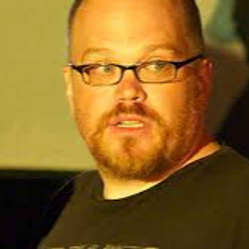
Tony Bloodworth
Tony Bloodworth a Writer/Director/Producer. After graduating from the University of Memphis with a major in Film and Video Production, Tony moved to Los Angeles where he wrote and directed several short films. The most recent of those -“Figure 8”- was selected to screen at the prestigious Los Angeles Short Film Festival. His previous film - the vampire drama “seeing”- screened at the Oxford Film Festival, as well as other festivals around the country. In 2015 and 2016 his first feature - the thriller Forced Move - screened at festivals and showcases around the world before Summer Hill Films obtained distribution rights to the film.
It was during the promotional period for Forced Move that Tony appeared on Jason Henderson’s Castle of Horror podcast. After this appearance, came the offer from Mr. Henderson to submit a short story for a potential horror/suspense/genre anthology. Tony is excited to contribute “Hardy Souls” to the endeavor and looks forward to hearing from the Castle of Horror fans.
David Boop
David Boop is a Denver-based speculative fiction author & editor. He’s also an award-winning essayist, and screenwriter. Before turning to fiction, David worked as a DJ, film critic, journalist, and actor. As Editor-in-Chief at IntraDenver.net, David’s team was on the ground at Columbine making them the first internet only newspaper to cover such an event. That year, they won an award for excellence from the Colorado Press Association for their design and coverage.
David’s debut novel, the sci-fi/noir She Murdered Me with Science, returned to print in 2017 from WordFire Press. (Simultaneously, he self-published a prequel novella, A Whisper to a Scheme.) His second novel, The Soul Changers, is a serialized Victorian Horror novel set in Pinnacle Entertainment’s world of Rippers Resurrected. David edited the bestselling weird western anthology, Straight Outta Tombstone, for Baen, and has followed with Straight Outta Deadwood and Straight Outta Dodge City. David is prolific in short fiction with many short stories and two short films to his credit. Additionally, he does a flash fiction mystery series on Gumshoereview.com called The Trace Walker Temporary Mysteries (the first collection is available now.) He’s published across several genres including media tie-ins for Predator (nominated for the 2018 Scribe Award), The Green Hornet, The Black Bat and Veronica Mars.
David works in game design, as well. He’s written for the Savage Worlds RPG for their Flash Gordon (nominated for an Origins Award) and Deadlands: Noir titles. Currently, he’s re-launching a classic RPG, Bureau 13: Stalking the Night Fantastic, as a Savage Worlds title, complete with tie-in novel.
His third go at a real degree landed him Summa Cum Laude in the Creative Writing program at UC-Denver. He also is part-time temp worker and believer. His hobbies include film noir, anime, the Blues and Mayan History. You can find out more at Davidboop.com, Facebook.com/dboop.updates or Twitter @david_boop.
David Bowles
The Path Book 1: The Blue-Spangled Blue · The Path Book 2: The Deepest Green
David Bowles is a Mexican American author and translator from south Texas, where he teaches at the University of Texas Río Grande Valley. He has written over two dozen award-winning titles, most notably They Call Me Güero and My Two Border Towns.
His work has also been published in multiple anthologies, plus venues such as The New York Times, Strange Horizons, Apex Magazine, School Library Journal, Rattle, Translation Review, and the Journal of Children’s Literature. Additionally, David has worked on several TV/film projects, including Victor and Valentino (Cartoon Network), the Moctezuma & Cortés miniseries (Amazon/Amblin) and Monsters and Mysteries in America (Discovery).
In 2017, David was inducted into the Texas Institute of Letters. He now serves as its vice president. In 2019, he co-founded the hashtag and activist movement #DignidadLiteraria, which has negotiated greater Latinx representation in publishing. In 2021, he helped launch Chispa, the Latinx imprint of Scout Comics, for which he serves as co-publisher. Follow him on Twitter and Instagram: @DavidOBowles
Jennifer Brody
Award-Winning Author Jennifer Brody (a/k/a Vera Strange) is the author of the DISNEY CHILLS series, THE 13TH CONTINUUM trilogy, and SPECTRE DEEP 6, which was a Bram Stoker Award Finalist, prompting Forbes to call her “a star in the graphic novel world.” She is the co-author of ALL IS FOUND: A FROZEN ANTHOLOGY and STAR WARS: STORIES OF JEDI AND SITH, where she penned the Darth Vader story. Her forthcoming short fiction will appear in "Weird Tales" and other anthologies, while her new space romantasy A SACRIFICE OF BLOOD & STARS debuts in Fall 2024. She lives and writes in Joshua Tree, California.
Julian Michael Carver
Julian Michael Carver is a pen name for documentary film editor Joey Kelly. Beginning his writing career in 2019, Carver has written books for both adults and children.
Carver describes his original works as science-fiction with a blend of horror and adventure. His most popular book is Triassic, a tale of space-marines in the distant future that get marooned in Earth’s prehistoric past. Triassic is available through sci-fi and horror publisher Severed Press.
In 2021, Carver wrote the official novelization of the horror film Freshwater, earning him a place within the IAMTW (International Association of Media Tie-In Writers) an organization of professional tie-in authors writing licensed fiction. In 2022, the novelization was nominated for the Scribe Awards alongside the novelizations of Alien 3 and Halloween Kills, appearing in Locus Magazine. In 2024, Carver wrote the only official media tie-in novel based on the show “Primeval: New World
Carver has also written for BattleTech, the wargaming franchise developed by FASA and currently licensed to Catalyst Game Labs by Topps. Carver is currently working on several other media tie-in projects across various licenses and is a frequent promoter of tie-in writers on social media. Carver loves to collaborate and aspires to land more media tie-in gigs in the future.
To keep up with Carver and his works, visit his blog at: julianmichaelcarver.home.blog or visit him on social media.
In 2013, Carver graduated from the now defunct Art Institute of Pittsburgh. Since college graduation, Carver has worked full time in the world of commercial advertising. His video content has been featured on Ancient Aliens, Roseanne, Forensic Files 2, and The Sinner.
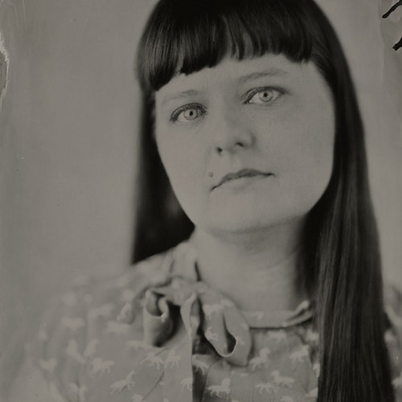
Katharine Coldiron
Junk Film: Why Bad Movies Matter
Katharine Coldiron is the author of Ceremonials, Junk Film, Wire Mothers, and Out There in the Dark. Her work has appeared in Ms., the Washington Post, Conjunctions, NPR, and many other places. Find her at kcoldiron.com or on Twitter and Letterboxd @ferrifrigida.
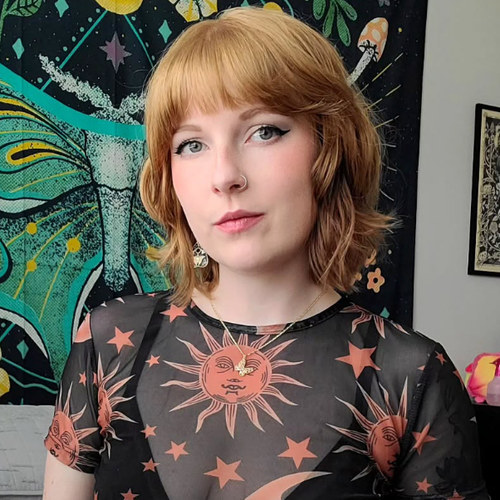
Artemis Fey Collins
Artemis Fey Collins is a college instructor, writer, and Twitch streamer. They received their PhD in experimental social psychology in 2022. Artemis is a lover of all things horror, video games, and weightlifting, and they live in the south of the United States with their husband and two cats.
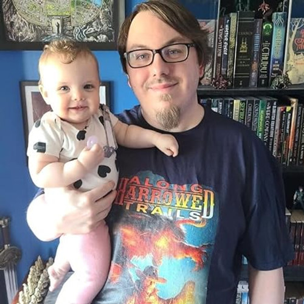
Jeremiah Dylan Cook
Jeremiah Dylan Cook is a writer who wants to give you nightmares that delight and excite. In addition to Castle Bridge Media, his work has been published by The NoSleep Podcast, Tales to Terrify, Ghost Orchid Press, Scary Dairy Press, Cabbit Crossing Publishing, Timber Ghost Press, The Lovecraft eZine, Hippocampus Press, and others. He’s won two writing contests and received the Mario Mezzacappa Memorial Award for Outstanding Achievement in Poetry and Prose while pursuing his bachelor’s degree at St. John’s University. Jeremiah completed his Master of Fine Arts in Writing Popular Fiction at Seton Hill University and is a member of the Horror Writers Association. You can learn more about his diabolical deeds and eldritch emanations at JeremiahDylanCook.com.
Shelli Cornelison
Shelli Cornelison lives in Austin, Texas and can confirm it is not a dry heat. Her short fiction for adults has appeared in Smokelong Quarterly, The Forge Literary Magazine, The First Line, and The Saturday Evening Post, among others. She also writes for children of all ages. In a former professional life, she worked with numbers. She prefers words. You can find her on Twitter as @Shelltex and at shellicornelison.net.
Dennis K. Crosby
Dennis K. Crosby is the multi award-winning/bestselling author of the Kassidy Simmons urban fantasy novels—Death’s Legacy (2020), Death’s Debt (2021), and Death’s Despair (2023). Souled is his ninth published short story. Originally from Oak Park, IL, Dennis completed his undergraduate work at the University of Illinois-Chicago. With a bachelor’s degree in Criminal Justice, he spent six years working as a Private Investigator. He later pursued a master’s degree in Forensic Psychology which led him to shift his profession to community mental health services.
Since 2008, he has worked primarily with men and women experiencing challenges with mental health, addiction, and chronic homelessness.
In 2018, Dennis completed an MFA program at National University. The bourbon loving Chicago Cubs fan and deep-dish pizza connoisseur continues to work on his Kassidy Simmons series and works on weird and creepy short stories in his spare time. A self-proclaimed geek and lover of pop culture, Dennis currently lives and writes in San Diego, CA. To keep up with his journey, check out denniskcrosby.com.
Debbie Lynn Smith Daughetee
Debbie Lynn Smith Daughetee has spent most of her career writing and producing such television shows as Murder, She Wrote; Dr. Quinn, Medicine Woman; and Touched by an Angel. She has published short stories in magazines and anthologies, including the Bram Stoker award-winning Dark Delicacies. In addition, she has also written audio dramas set in the world of the 60’s classic television show, Dark Shadows, including her Scribe award nominated, The Lost Girl. Most recently, Debbie created Kymera Press, a comic book publishing company that supports women in comics. She writes the comic series, Gates of Midnight which was winner of the 2019 Irwin Award. She also publishes the Bram Stoker Award Winning Mary Shelley Presents Tales of the Supernatural. Debbie travels the country with her husband Paul attending comic book conventions where they sell their books. Probably the most interesting thing about Debbie is that she is a double lung transplant. Please become an organ donor. It saves lives. Twitter: @kymerapress Facebook: Kymerapress, D. Lynn Smith IMDB: Debbie Smith
Ty Drago
Ty Drago is a full-time writer and the author of ten published novels, including his five-book Undertakers series (Sourcebooks/Month9Books), the first of which has been optioned for a feature film. His most recent novels are Checkmate (eSpec Books), a SF political thriller, and Rags (NeoParadoxa), a YA horror novel about Voodoo and mayhem in 1980’s Atlantic City. He’s also the founder, publisher, and managing editor of ALLEGORY, a highly successful online magazine that, for more than twenty years, has featured speculative fiction by new and established authors worldwide.
Eric T. Eichinger
Eric Eichinger is an ordained minister in the Lutheran Church—Missouri Synod. He holds degrees from Michigan State University (BA), where he ran varsity track & field, and Concordia Seminary (MDiv).
Prior to his pastoral call, he lived in New York for two years as a youth director for his church, and served with LCMS World Mission for two years in mainland China.
Eric serves as senior pastor of Bethel Lutheran Church in Clearwater, Florida, and resides in the Tampa Bay area. He and his wife, Kara, have three children, and a tenacious pup dachshund, Doppelbock, who chews everything he can find with the work ethic of a velociraptor
Dotti Enderle
Dotti Enderle is the author of more than 60 books for kids and adults. Her middle-grade horror novel Wanna Play a Game? will be out in summer 2024.
Madison Estes
Madison Estes is the editor of Road Kill Vol. 6 and is currently working on her debut short story collection. When she’s not playing JRPGs or escape room games, she’s writing, drawing or running a horrortube channel.
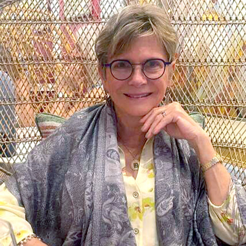
Herta Feely
Herta Feely is the author of Saving Phoebe Murrow, and numerous short stories and memoir, published in literary journals and anthologies. Recently, she completed her next novel, Strange Shape of Love, represented by Williamson Literary and acquired by Castle Bridge Media, due out September (2025). Both suspense-filled novels deal with the complex issues of social media and the dark web and their impact on modern culture.
Saving Phoebe Murrow, about a young girl who gets cyber bullied and the misguided adults around her, won numerous contests and awards and received praise for its timeliness and relevance.
Herta is an editor, writing coach, and ghostwriter at Chrysalis Editorial, a company she founded in 2007. She has worked with hundreds of writers to help them perfect their writing and to find agents and publishers for their work. She has ghostwritten three memoirs, all of which have been published. An avid reader, she consumes dozens of books each year and reviews some of them on Goodreads.
Caroline Kelly Franklin
The Thing That Happened When We Were Little
Caroline Kelly Franklin is a playwright and screenwriter whose work has been produced in New York and Los Angeles. She is the creator of ZDF’s upcoming television series The Brontë Girls based on her play trilogy. The Brontë Girls Play Trilogy debuted at The Bechdel Project NYC. Her play Last Night at The Carmine was produced by The New York International Fringe Festival. She holds a Bachelor’s degree in Theatre from Troy University and grew up in Lexington, KY. This is her first novel.

S. de Freitas
S. de Freitas started making up stories as a kid, writing puppet shows to perform for neighbors. When she was old enough to drive, she graduated to writing real stories for newspapers and magazines. Now she combines those two skills to write made up stories that might or might not be inspired by real ones.
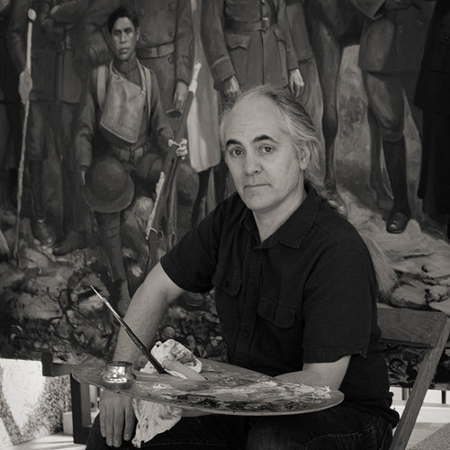
David Geister
Minneapolis artist David Geister is a storyteller with a paintbrush, who has spent three decades creating artwork for museums, historic sites, publications and private collectors. He is the illustrator of more than 20 picture books, including B is for Battle Cry: A Civil War Alphabet, written by his wife, Pat Bauer. Dave is a frequent visitor to schools, where he shares his passion for making art, creating stop-motion animated films and playing with miniature soldiers. He is an “old school” Monster Kid and proud member of the Monster Movie Happy Hour podcast crew. Visit his website, www.davidgeister.com.
Teel James Glenn
Teel James Glenn’s poetry and short stories have been printed in over two hundred magazines including Weird Tales, Mystery Weekly, Pulp Adventures, Space& Time, Mad, Cirsova, Silverblade, and Sherlock Holmes Mystery. His novel A Cowboy in Carpathia: A Bob Howard Adventure won best novel 2021 in the Pulp Factory Award. He is also the winner of the 2012 Pulp Ark Award for Best Author. His website is: TheUrbanSwashbuckler.com. Find him on Facebook at Teeljamesglenn and Twitter at @teeljamesglenn.
Jay Gould
Jay Gould (not the famous one) was born in Vancouver, Canada, in 1960, adopted and raised in the beautiful small town of Nelson, B.C.. Active in sports, he played ice hockey, baseball and basketball - all badly - before finally excelling at track-and-field, which led to a scholarship at Washington State University, which he squandered and left after only one year. Several years of working a real job as a medic in the northern oilfields of Canada then inspired him to return to university in Victoria, B.C. and accidentally attain a B.A. in Asian/Pacific Studies, supporting himself by delivering Chinese food and working as a model. Eventually graduating in 1988, he found himself, quite by accident again, in Northern Japan for three years and began his career in international relations and international education. Despite this awesome experience, he left Japan in 1991 - married and with children coming - and returned to Canada to build on his career for five years, then changed his mind again and returned to Japan in 1996 with his wife and their three kids, still following career opportunities and searching for what he wanted to be when he finally grew up. They have lived near Osaka since then and have their own business there, still connected to international education. Jay loves travel, art, architecture, woodworking, outdoor activities such as hiking and climbing, reading and writing (of course). At any given moment, he has approximately 14 Great Novels on the go (possibly one the most prolific unpublished authors ever) and drives Melinda nuts by trying to improve their house any way he can (which is why she encourages his writing). They have traveled all over Asia and recently discovered Europe, which will figure prominently in future travel adventures of theirs. Jay waited 57 years before attempting to publish one of his books and encourages others not to do the same.
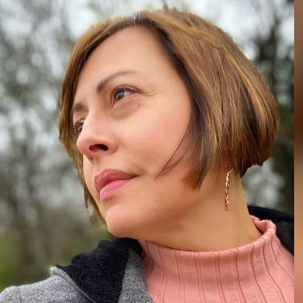
Carmen Gray
Carmen Gray is a Native Texan of Mexican-American heritage. She is a Dual Language teacher living in Austin, Texas. Her work has appeared 3 times in different volumes of Road Kill: Texas Horror by Texas Writers. She has also authored 4 short stories published by Castle Bridge Media and her poetry can be found in a variety of anthologies. A member of The Writer's League of Texas, she continues to work as a freelance writer and editor for Latino and Mueller magazines. Carmen has written two novels that are currently out on submission with her agent.

Deven Greene
Mid-Life Crisis Thriller Book 3: Ties That Kill
Fiction writer Deven Greene lives in the San Francisco Bay area. Ever since childhood, the author has been interested in science. After receiving a doctorate in biochemistry, she went to medical school and trained as a pathologist. She worked for several decades in that field before starting to write fiction, mostly in the suspense/thriller genre. Deven incorporates elements of medicine or science in most of her writing. She has published several short stories in addition to her novels.
Julia Guzman
Julia Guzman practices immigration law near Denver, CO. She graduated from Georgetown University Law Center and received her BA from the University of Texas at Austin. Julia’s parents, who raised her speaking Spanish, immigrated from Nicaragua and inspired her passion for immigrants. She volunteers a lot in the community, doing legal clinics, presentations, media engagement, and pro bono work. She is also a founding cast member of the Castle of Horror Podcast. In her “spare time,” Julia enjoys singing, dancing, photography and exploring Colorado.
Ammar Habib
Ammar Habib is a bestselling author from Lake Jackson, Texas. He is the author of 12 books and 30 short stories. Ammar writes in a variety of genres, including historical fiction, historical nonfiction, children’s fiction, and action/thrillers. His most popular novels include The Heart of Aleppo and The Orphans of Kashmir. He has also been featured in several anthologies, including Predator: Eyes of the Demon.
Jess Hagemann
Jess Hagemann’s recent work has appeared in Southwest Review, Castle of Horror: Femme Fatales, and Into the Forest: Tales of the Baba Yaga. She has an MFA from the Jack Kerouac School. Her debut novel Headcheese won an IPPY Award in Horror.
John Helfers
John Helfers is a full-time freelance writer and editor, and is the president of Stonehenge Editorial, an editorial/literary management company. He has published almost fifty short stories in anthologies such as Schemers (Stone Skin Press) and Shattered Shields (Baen Books). His media tie-in fiction has appeared in anthologies, game books, and novels for the Dragonlance®, Transformers®, BattleTech®, Shadowrun® and Warlock II® universes. He’s also written fiction and nonfiction, including a novel based on The Twilight Zone™ television series, the young adult novel Tom Clancy’s Net Force Explorers™: Cloak and Dagger, the original fantasy novel Siege of Night and Fire, and a history of the United States Navy. He currently works with several game companies, and recently added game designer to his list of accomplishment with Henchman, co-created with Dylan Birtolo and published by Clarion Game Studios.
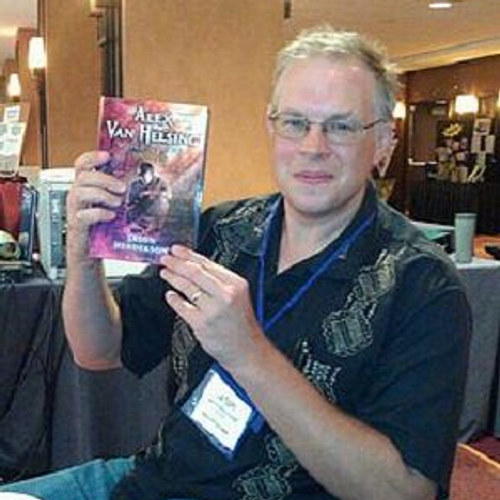
Jason Henderson
Elsie Frankenstein and the Case of the Disappearing Dog · Sherry Dracula and the Case of the Lunchroom Phantom · Rico Gillman and the Case of the See-Through Woman · Mid-Life Crisis Thriller Book 1: 18 Miles From Town
Jason Henderson is a Locus Best-selling author (for the first Highlander novel), WGA Screenwriting Award nominee, and a Texas Lone Star List recipient for his series Alex Van Helsing. He is the host of the Castle of Horror/Castle Talk Podcast, which regularly features genre stars like Elvira and Rob Zombie. Jason’s Young Captain Nemo series reached #1 on multiple lists. With In Churl Yo, he co-publishes Castle Bridge Media.
Henry Herz
Henry Herz’s stories will/have appeared in Daily Science Fiction, Weird Tales, Pseudopod, Metastellar, Titan Books, Highlights for Children, Ladybug Magazine, and anthologies from Albert Whitman & Co., Blackstone Publishing, Brigids Gate Press, Air and Nothingness Press, Baen Books, and elsewhere. He's edited seven anthologies and written twelve picture books, including the ALA Notable Children's Book, I Am Smoke.
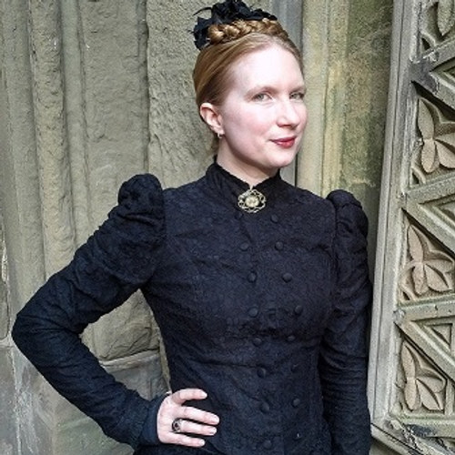
Leanna Renee Hieber
Glazier's Gap Book 1: Ghosts of the Forbidden
Leanna Renee Hieber is an actress, playwright, ghost tour guide and an award-winning author of Gaslamp Fantasy novels such as the Spectral City and Strangely Beautiful series. A Haunted History of Invisible Women: True Stories of America’s Ghosts, non-fiction co-authored with Andrea Janes, explores women’s history through ghost stories and was a Bram Stoker Award finalist for Superior Achievement in Non-fiction. She writes and narrates audiobooks of speculative fiction for Everand.com. Her Strangely Beautiful saga garnered three Prism Awards and she was a Daphne du Maurier Award finalist for Darker Still. Her short works have been featured in numerous notable anthologies, her essays have been featured in magazines like Apex, Psychopomp and The Deadlands and her books have been translated into many languages. Featured in film and television on shows like Mysteries at the Museum and Beyond the Unknown, discussing Victorian Spiritualism, she is a guide for NYC’s Boroughs of the Dead and lectures nationwide on Gothic themes, 19th Century women’s history, Spiritualism and the Paranormal. More at leannareneehieber.com.

Liz Holliday
Liz Holliday has written short stories (her story “And She Laughed…” was shortlisted for the Crime Writers’ Association short story award and adapted for the TV show The Hunger), 10 TV novelizations and around 30 books for kids, but she isn’t sure she can call herself a writer as she doesn’t have a cat. She currently freelances as a question editor for a mobile trivia games company, where her boss says she ought to have ‘Professional Pedant’ on her business cards. Liz lives in London (England, not Canada) and you can meet her at facebook.com/liz.holliday.39/
P. J. (Tricia) Hoover
P. J. (Tricia) Hoover wanted to be a Jedi, but when that didn’t work out, she became an electrical engineer instead. After a fifteen year bout designing computer chips for a living, P. J. started creating worlds of her own. She’s the award-winning author of over 40 books, including Tut: The Story of My Immortal Life, featuring a fourteen-year-old King Tut who’s stuck in middle school, Deadly Decisions: Into The Woods, an interactive horror adventure with 80s slasher overtones, and the editor of Castle of Horror Volume 6: Femme Fatales. Under the Connor Hoover pseudonym, she is also the author of the popular Pick Your Own Quest series, which are interactive adventures perfect for everyone. When not writing, P. J. loves spending time practicing kung fu, fixing things around the house, and solving Rubik’s cubes. For more information about P. J. (Tricia) Hoover, please visit her website pjhoover.com.
Serena Jayne
Born under the sun sign of Leo, Serena Jayne is naturally a cat person. Her short fiction has appeared in The Arcanist, Daily Science Fiction, Gamut Magazine, Unnerving Magazine, Vastarien: A Literary Journal, and other publications. Her short story collection, Necessary Evils, was published by Unnerving Books. She tweets @SJ_Writer and Instagrams @jayneserenawriter. serenajayne.com.
Britta Jensen
Britta Jensen’s debut novel, Eloia Born, won the 2019 Writer’s League of Texas YA Discovery Prize and was long-listed for the Exeter Novel Prize. Reviewers are calling the book “both a dystopian narrative and a quest story; consider it a spiritual successor to Lois Lowry’s The Giver and M. Night Shyamalan’s The Village.” The sequel, Hirana’s War released October 1, 2020. Her stories explore themes of persevering through disability, parental separation and the intersection of various cultures on new worlds. Her novella, Ghosts of Yokosuka released this year. She earned a BA in Acting Performance from Fordham University, an MA in Teaching of English Literature from Columbia University and is an alumni of the Faber Academy. Friends often refer to her as a polyglot—which is a product of living twenty-two years overseas in Japan, South Korea, and Germany before settling in Austin, Texas. She enjoys mentoring writers and editing books with The Writing Consultancy and Yellowbird Editors and teaches freshman composition at St. Edwards University. Learn more about her work at britta-jensen.com or @brittajensenwrites on IG.
Bernadette Johnson
Bernadette “Berni” Johnson began her career as an author at age 6 when she crayoned a book about her mom that received a rave review from its lone reader. She keeps herself in pens, paper, and other writing paraphernalia with an IT job, and spends her free time writing both fiction and nonfiction, voraciously consuming TV and movies (mostly horror), reading random stuff, mindlessly surfing the Internet, and doing the bidding of her terrier. You can read Berni’s blog, find links to her writing, or join her mailing list at bernijohnson.com, read some of her short stories for free at vocal.media/authors/bernadette-johnson, and check out her social media ramblings on Twitter (@Bernij), Instagram (/infocomgirl), and FaceBook (/BerniJohnsonWriter).
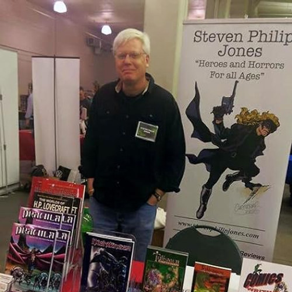
Steven Philip Jones
Steven Philip Jones writes novels, graphic novels, audio scripts, non-fiction books and anything anybody needs him to write. He enjoys working in all genres and his stories have been published by the likes of Aconyte Books, Actionopolis, Belanger Books, Caliber Comics, Campfire Comics, DBS Press, IDW, McFarland Publishing, Malibu Graphics, and MX Publishing. Among his best-known credits are the novels Henrietta Hex: Shadows From the Past and King of Harlem, the comics series H. P. Lovecraft Worlds and Nightlinger, graphic novel adaptations of the films Re-Animator and Invaders from Mars, and the review text The Clive Cussler Adventures: A Critical Review. Steven graduated from the University of Iowa where he majored in Journalism and Religion and was accepted into Iowa’s prestigious Writers’ Workshop MFA Program. A proud husband and father, Steven currently resides in northern Utah.
Tony Jones
Tony Jones has dined with royalty, supped Slings in Singapore and been taught by several Nobel Prize winners (though he could have paid more attention!) He is a writer and blogger based in the early 21st Century. A retired management consultant, he was Audio Drama Editor for Starburst Magazine, and now occasionally writes pieces for Cultbox. He wrote a few Doctor Who stories for Big Finish (and several fan publications) and is now dabbling with self-publishing, horror stories and rediscovering his love for D&D.
R. J. Joseph
R. J. Joseph is an award winning, Shirley Jackson and Stoker Award™ nominated Texas based writer/speaker/editor. Her creative and academic work examines the intersections of race, gender, and class in the horror genre and popular culture. She has most recently been at work with Raw Dog Screaming Press on their new novella line, Selected Papers from the Consortium for the Study of Anomalous Phenomena. She occasionally peeks out on various social media platforms from behind @rjacksonjoseph or at rhondajacksonjoseph.com.
Beth Kander
Beth Kander is an author and playwright with tangled roots in the Midwest and Deep South. The granddaughter of immigrants, she is interested in the intersection of new ideas and identities with old stories, secrets, and legends. Follow her on Twitter (@ByBethKander), Instagram (@bethkander), or visit bethkander.com.
Kathleen Kent
Kathleen Kent is a New York Times bestselling author of historical fiction and an Edgar Award Nominee for her contemporary crime trilogy, The Dime, The Burn and The Pledge. Her newest novel, Black Wolf, an international spy thriller, has received glowing reviews in both the US and the UK. She has written short stories and essays for D Magazine, Texas Monthly and LitHub, and has been published in several crime anthologies. In March 2020 she was inducted into the Texas Institute of Letters for her contribution to Texas literature.
Sam Knight
Mid-Life Crisis Thriller Book 2: Lost Angel
Sam Knight is the owner/publisher of Knight Writing Press and author of six children’s books, five short story collections, four novels, and over 90 stories, including three co-authored with Kevin J. Anderson.
Once upon a time, Sam was known to quote books the way some people quote movies, but now he claims having a family has made him forgetful, as a survival adaptation. He can be found at SamKnight.com and contacted at sam@samknight.com.
Alethea Kontis
Alethea Kontis is a storm chaser, world traveler, and New York Times bestselling author. She has received the Scribe Award, the Garden State Teen Book Award, and is a two-time winner of the Gelett Burgess Children’s Book Award. She was twice nominated for both the Andre Norton Nebula and Dragon Award. Alethea also narrates stories for multiple award-winning online magazines, contributes book reviews to NPR, and does freelance work for Writing the Other. Born in Vermont, Alethea currently resides on the Space Coast of Florida where she watches K-dramas with her teddy bear, Charlie. Together they are ARMY, VVS, and Black Roses.
Frazer Lee
Frazer Lee is the author of six novels including Bram Stoker Award®-nominated debut The Lamplighters. Winner of the Edgar Allan Poe Gothic Filmmaker Award, Frazer’s screenwriting and directing credits include the acclaimed horror films Panic Button and The Stay. Frazer is Reader in Creative Writing at Brunel University London, and resides with his family in Buckinghamshire, just across the cemetery from the real-life Hammer House of Horror. Come break his heart at: www.frazerlee.com.
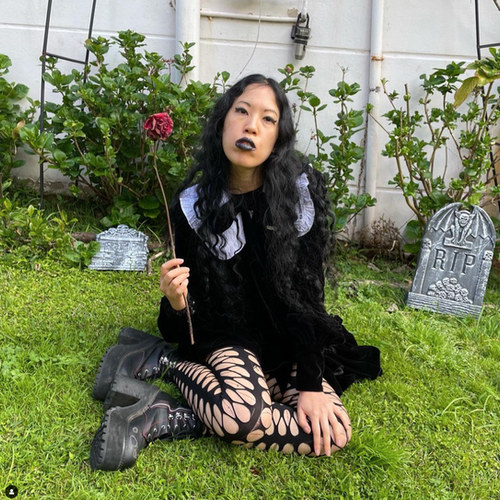
Claire Low
Claire Low, also known as Claire Engkaninan Low, is an Australian writer and artist. Her story 'After I Found Her', published in This Fresh Hell by Clan Destine Press, was nominated for the Paul Haines Award for Long Fiction in the Australasian Shadows Awards.
A former newspaper journalist and magazine editor, Claire is twice shortlisted and highly commended for the Marjorie Graber-McInnis Short Story Prize. As an artist, Claire is a seven-time prize finalist and one-time award winner (the Reused/Recycled Materials Award, Reimagine 2023). A firm believer in ghosts and monsters, she collects gothic dolls and celebrates Halloween all year.
Sara Martinez
Sara Martinez is an author, RPG writer and game designer when she’s not chasing her two kids around. She loves to read, write and play games across a variety of genres. Published credits include the short story “Old Wives Tales” in From the Yonder Vol. IV from War Monkey Publications and the Hell on the High Plains supplement book for Deadlands by Pinnacle Entertainment Group. saramartinezauthor.com/
Jae Mazer
Jae Mazer is a Canadian who was born in Victoria, British Columbia, and grew up in the prairies of Northern Alberta. After spending the majority of her life battling sasquatches in the Great White North, she migrated south to Texas to have a go at the armadillos. She is a connoisseur and creator of gothic horror, splatterfolk, splatter westerns, and folk horror. She’s degreed, won awards, been in anthologies, owns a couple of breweries, has chameleon hair and lots of skin ink, and enjoys mustard and alcohol.
Guadalupe Garcia McCall
Guadalupe García McCall is the national bestselling, award-winning author of several young adult novels, some short stories for adults, and many poems. Guadalupe has received the prestigious Pura Belpré Author Award, a Westchester Young Adult Fiction Award, the Tomás Rivera Mexican-American Children’s Book Award, among many other accolades. Guadalupe is currently Affiliate Faculty in the MFA Creative Writing program at Antioch University LA. She lives in San Antonio, Texas, where she is working on the Seasons of Sisterhood series, three YA novels set in the world of Summer of the Mariposas, coming from Tu Books 2025-thru-2027.
Will McDermott
Will McDermott turned a love of science fiction and games into a writing career. He has published nine novels, more than 25 short stories, and helped create numerous worlds, characters, and stories for card, board, and video games. His fiction is often set in gaming universes, including Magic: The Gathering, Warhammer 40K, Renegade Legion Universe, iMage Wars. He is known for bringing larger-than-life characters alive, including Warhammer’s Kal Jerico and Mad D’onne, Magic’s Balthor the Stout and, more recently, Night Stalker’s Carl Kolchak. Check out willmcdermott.com, w_mcdermott on Instagram or willmcdermott.author on Facebook.
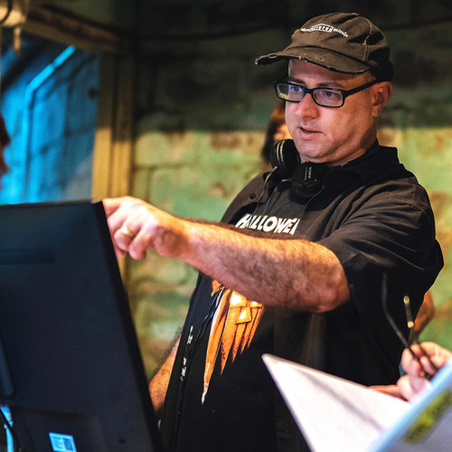
Christopher A. Micklos
Christopher A. Micklos is a life-long horror junkie, an award-winning filmmaker, and a frequently published writer of horror-themed fiction and non-fiction.
His first feature film, THE NURSERY (writer/co-director), was distributed by Uncork’d Entertainment in 2018; and his second feature, THE HEADMISTRESS (writer/co-director), was distributed by Indican Pictures in 2023. He recently signed with Castle Bridge Media to publish his first novel, a pulp horror adventure called TICK TOWN.
An active member of the Horror Writers Association and the Wisconsin Writers Association, Christopher was recently awarded the Wisconsin Backbone of Horror Award for “crafting amazing horror experiences” and “supporting Wisconsin horror”. His horror writing has appeared in outlets like Rue Morgue Magazine, DreamOfShadows.co.uk, Sci-Fi Lampoon Magazine, and the Chilling Tales for Dark Nights podcast, among many others.
Christopher lives in Madison, Wisconsin, with his wife, daughter, two frisky ferrets, and their monstrous mini-labradoodle Ygor.
James A. Moore
James A. “Jim” Moore has been writing professionally for over twenty-five years. His works include over thirty novels, including the Stoker Nominated SERENITY FALLS trilogy, the SEVEN FORGES series, the TIDES OF WAR and BLOOD RED trilogies and many standalone horror titles as well as several licensed properties, such as BUFFY THE VAMPIRE SLAYER: CHAOS BLEEDS, and VAMPIRE: HOUSE OF SECRETS for White Wolf Games. He spent many years honing his skills with work in RPGs and in the comics field, but now works mostly on short stories and novels. His latest novel, THE GODLESS, comes out in September. You can find him at: @JamesAMoore on Twitter and www.facebook.com/james.a.moore1/ on Facebook.
Janice Nagourney
French Deception 2: A Forgery in Lyon · French Deception: A Forgery in Paris · French Deception: A Forgery in Toulouse · French Deception: A Forgery in Marseille
Marseille-based attorney Janice Nagourney is the creator of the series “French Deception.” A Forgery in Paris and A Forgery in Lyon have kicked off the series; a third book—A Forgery in Marseille—will be released in December 2024, with further stories in the saga to follow. Janice is founder of consulting group and speaker’s bureau Thought Leaders International. She has booked speakers for hundreds of events in Europe, the Middle East, Asia and the United States. Janice graduated from Cornell University and NYU Law School, and completed pre-doctoral studies in international law at the University of Paris law school. When she’s not working on her next thriller you can find her at the beach or at janicenagourney.com.
Rebecca Anne Nguyen
Rebecca Anne Nguyen (she/her) is the winner of the 2024 Reader's Choice Award for Best Adult Book (Bronze) for her debut novel, The 23rd Hero, and the winner of the 2019 Foreword Indies Award (Silver) for the memoir Where War Ends. Her writing has appeared in the New York Times, Insider, Slackjaw, Defenestration, Wintermute Lit, and Military Times, among others. Rebecca's stage play, Hypotheticals, was the 2023 winner of the Epiphanies New Works festival and received its world premiere production at Kith & Kin Theatre Collective in Milwaukee in 2024. Rebecca studied fiction with Susan Choi and Hannah Tinti at the Sirenland Writers Workshop in Positano, Italy and playwriting at the University of Miami. She lives in Milwaukee.
Photo credit: The Refinery Photo Studio @refinerymke
Rob Nisbet
Rob Nisbet has had over 100 stories printed in anthologies and magazines ranging from romance (using his wife’s name) to horror. His wife has recently turned to crime. He lives in the sleepy cliff-top town of Peacehaven, near Brighton UK, where he plots his murders and other horrors while walking his ferocious little westie. He has won five international writing competitions including the 2022 Kepler Award for a sci-fi / fantasy short story. He also writes audio drama. He has adapted work by Philip K. Dick for radio and has had several audio scripts produced by Big Finish / BBC for their Doctor Who range.
Rain Nox
Animal Charmer · Magic & Melody (Animal Charmer Book 2)
Rain Nox is the author of Animal Charmer and Nothing Blooms in the Shade. She currently resides in Texas, where she enjoys gardening, nature, and cats. For more information, visit www.rainnox.com.
Lauren Oertel
Lauren Oertel is a writer, editor, workshop facilitator, and community organizer based in Austin, Texas. She is the coauthor of the collaborative book, Inside Out: A Texas Prisons Poetry Story, and her debut full-length poetry collection, Scars & Other Luxuries, is forthcoming in 2026.

John Ohno
John Ohno is a software engineer and freelance essayist who has written for Tedium and Mondo 2000. He lives in Connecticut with his cat.
Martin Ott
Martin Ott is the author of ten books of fiction and poetry. His first two poetry collections won the De Novo and Sandeen Prizes. His work has appeared in more than 300 magazines and 20 anthologies. A former US Army interrogator and longtime LA resident, Ott works as a communications professional and develops for TV and film in between other writing projects. His Writeliving blog - http://writeliving.wordpress.com/ - has been read by more than 30,000 people in 100+ countries. More at www.martinottwriter.com.

Mike Owsley
Mike Owsley is an author and activist. You can find him physically in Missouri, or virtually @BigMikeOwsley on Twitter. His short stories have previously appeared in the Castle of Horror Anthology and The QRM Zine.
Lara Parker
The beloved, late Lara Parker wrote four original Dark Shadows novels, including Dark Shadows: Wolf Moon Rising and Dark Shadows: Angelique’s Descent. She played the role of Angelique during the first run of the iconic, cult television show. She grew up in Memphis Tennessee, attended Vassar College, majored in Drama at the University of Iowa, and received her MFA in Creative Writing from Antioch University at Los Angeles She lived in Topanga Canyon, California and passed away in 2023.
Sandra J. Paul
Sandra J. Paul is an award-winning author who has written over thirty novels. Her books have been translated in over fourteen languages. Her novel My Truth is opted for film or limited streaming series. Her novel The Girl without a voice will be published by Watkins Publishing Group (UK) and Penguin Random House (USA). Her novel Everyone is worried will be released in the US in the Fall of 2024. The author has been shortlisted for various writing competitions, such as Coverfly Cinematic Book/Short Story competition. She has won various awards for her psychological thrillers. The film/streaming rights of her thriller My Truth have been sold. She is currently writing a feature film, the psychological thriller "Who you are".
Scott Pearson
Scott Pearson is a freelance writer and editor working across multiple genres in both traditional and indie publishing. His published works include short stories and novellas in humor, mystery, horror, urban fantasy, and science fiction in various anthologies, such as Castle of Horror 4, 5, 7, 9, 10, and 11. Scott’s Star Trek fiction appears in anthologies and the e-book exclusive The More Things Change. For several years he has copyedited the Star Trek novels and edited and written for the Star Trek Adventures roleplaying game. Scott and his daughter, Ella, cohost the very occasional Generations Geek podcast. Scott and his wife, Sandra, live in the wilds of Minnesota. Visit him online at scott-pearson.com and generationsgeek.com. Follow him on Bluesky as @scottpearson (or the same on Hive, Mastodon, Post, Spoutible, and Tribel) or on Threads as @smichaelpearson (or the same on that place formerly known as Twitter). Please stop Scott from starting an account on any other social media platforms. Oh, no, he just remembered he’s also on Instagram.
John Peel
John Peel was born in England but moved to the U.S. in 1981. He began writing articles for magazines in 1980 and edited “Fantasy Empire” for several years. He’s written over a hundred novels. These include creating his own fantasy series (“Diadem” and “Dragonhome”), and a large number of TV tie-in novels for shows like “Doctor Who”, “Star Trek”, and “The Outer Limits”. He’s also written about two dozen short stories, which are being collected into two volumes later this year.

L.H. Phillips
L.H. Phillips is a retired molecular biologist with a life-long love of speculative fiction. Her previous stories have appeared in Aphelion, The Nameless Songs of Zadok Allen, Road Kill vol. 9, Mysterion, Behind the Revolving Door, and Starship Blunder 2. She lives in San Antonio, TX with her husband and cat.
Joy Preble
Joy Preble is the author of a medium-long list of young adult novels and short stories, as well as a children’s picture book forthcoming in 2025. She is fond of clever conversation and clever cocktails, teaches writing at Writespace Houston and is also the Children’s Programming Director at Brazos Bookstore. Visit Joy at joypreble.com or follow her on Twitter or IG @joypreble.
John Pritchard
John Pritchard has been fascinated by horror films and supernatural stories for as long as he can remember. At school his English teacher told him he had a morbid imagination and he’s been putting it to good use ever since, writing the horror novels Night Sisters, Angels of Mourning and The Witching Hour, the fantasy epic Dark Ages, and several spooky Doctor Who audio dramas for Big Finish, two of which were nominated for Scribe Awards. He still enjoys his day job in hospital administration and likes reading about history and current affairs in his spare time. He tweets about movies, ideas, and pleasing paragraphs at @MissFury1.
The Donjon was inspired by Michael Mann’s film The Keep and F. Paul Wilson’s source novel, as well as by a vignette in David A. Bell’s book The First Total War, and a location in Victor Hugo’s great novel of the French Revolution, Ninety-Three.
E.G. Rand
E.G. Rand is an author from Portland, Oregon. They started out working in publishing at Marvel Comics. Their work includes the novel "Child of Dark Water" which will be published by Castle Bridge Media in April, as well as a collection of short stories "Tombstone Teeth and Other Horrors." E.G. Rand's writing has also been featured in literary magazines alongside horror great Clive Barker.
Mark Rigney
Mark Rigney is a writer living and working in Evansville, Indiana. Over fifty of his short stories have found print in venues ranging from the literary (Witness, The Best of the Bellevue Literary Review) to fantasy and horror (Lightspeed, Cemetery Dance). As a long-time columnist for Black Gate, his musings on all things sci-fi and fantasy can be found at blackgate.com. Theater-wise, his stage plays have been produced in twenty-two U.S. states plus Australia, Austria, Canada, Hong Kong, Nepal, and New Zealand, as well as off-Broadway in NYC. He is a member of the Dramatist’s Guild and has won multiple national playwriting contests, including the 2017 John Gassner Award, the Panowski Playwriting Award (twice), and the Maxim Mazumdar New Play Competition. His published plays are available from Playscripts, Inc., Heartland, and Smith & Kraus’s The Best Ten-Minute Plays, among others. He is married with children and collects (no, seriously) really old beer cans. His website, with links to most of his published stories, is markrigney.net. Other ways to connect include Instagram @rigneymark and Facebook via markrigneyauthor.
Michael Joseph Tharnish Roby
Michael Joseph Tharnish Roby fancies himself a fantasy, comedy, and horror writer, occasionally juggling all three simultaneously. He started writing for puppet shows in first-grade, and never really stopped, even after Seton Hill University gave him an MFA for doing so. He was previously published in Back Roads Literary Review with the short story The Decay Diary, his take on the apocalypse by way of Alice in Wonderland. MJTR resides in Des Moines, Iowa, with his wife and too many pets, imagining whatever off-kilter thing he’s going to write next. His musings, free short stories, and upcoming publication announcements can be found at mjtroby.wixsite.com/mjtrauthor.
S. N. Rodriguez
S. N. Rodriguez is a writer and photographer in Austin, Texas. She currently serves on the Board of Directors for the Writers' League of Texas, and her work has appeared in The Journal of Latina Critical Feminism, Blue Mesa Review, River Teeth, The Pinch, Hippocampus Magazine, Castle of Horror Anthology Volume 6: Femme Fatales, Castle of Horror Anthology Volume 9: Young Adult, and elsewhere. You may read her work at snrodriguezwrites.com, and follow her on Instagram: @snrodriguezwrites.
Charles R. Rutledge
Charles R. Rutledge is the author of Dracula’s Return, and of three novels in the Griffin & Price supernatural suspense series, written with James A. Moore. His short stories and articles have appeared in over 50 anthologies, including The Drive-In: Multiplex, Weird Tales: 100 Years of Weird, and Clickers Forever. Charles keeps soil from Transylvania in an envelope on his desk, owns entirely too many editions of Dracula, and is seldom seen in daylight.
Don Sawyer
The Burning Gem (Soul Catcher Book 1) · The Tunnels of Buda (Soul Catcher Book 2)
An educator and writer, Don grew up in Michigan and came to Canada in the 1960s, where he more or less flunked out of his PhD program in Modern Chinese History at the University of British Columbia. This turned out to be a blessing as it opened up a world of opportunity and experiences he had never contemplated. From teaching in a small Newfoundland outport to training community development workers in West Africa to teaching adults on a First Nations reserve in British Columbia to designing a climate change action course for Jamaican youth, he has worked with youth and adults from many cultural backgrounds and in a variety of locales.
Inevitably, these experiences have made their way into his writing. Don has authored over 12 books, including two Canadian bestsellers: the YA novel Where the Rivers Meet (Pemmican) and the adult non-fiction Tomorrow Is School and I Am Sick to the Heart Thinking about It (Douglas and McIntyre). The first book in his Miss Flint series for children, The Meanest Teacher in the World (Thistledown) was translated into German by Carlsen and Ravensburger. His articles and op-eds have appeared in many journals and most of Canada’s major dailies
Don was never a very good boxer, but he continues to train in the ring and walk in the woods whenever his hips don’t hurt too much. He currently lives in St Catharines, Ontario, with Jan Henig Sawyer, his very tolerant wife of 54 years.
More information on his writing is available at donsawyer.org.
Melanie Schubert
Melanie Schubert is a Croatian Australian who lives with anxiety disorder and likes writing about badass anxious characters who do it scared. She is a host and a creator of the writing podcast: Of the Publishing Persuasion, together with her wildly talented and hilarious co-host Angela Montoya (Author of Sinners Isle 2023). She has written multiple musical productions for the New Zealand performing arts company Gobsmacked for large-scale stage productions. She lives with her biscuit of a husband and one highly opinionated French Bulldog in Melbourne Australia, but a piece of her heart is always in Japan.
Heath W. Shelby
Heath W. Shelby is a horror aficionado…horror movies, video games and reading and writing horror fiction. Heath lives in Searcy, Arkansas with his daughter Caitlynn, her rowdy Boston Terrier Cocoa and his Maltizhu, Leia. Heath is also the father to his son Collin and grandfather to his son’s Husky, Uki. Heath spends his free time writing, working as a College Admissions Advisor, being the play-by-play radio voice for some local high school sports teams, listening to 80s music in his Mustang and hoping his 49ers will win one more Super Bowl within his lifetime. As a writer, Heath’s work has so far appeared in Castle of Horror Anthology Volumes 5, 8 and 10. Facebook: facebook.com/heathwshelby - Instagram: the_heath_shelby - Twitter: @heath_shelby
Madeline Smoot
Madeline Smoot has never personally met a ghost, and she’s hoping to keep it that way. Instead, she prefers to spend her time writing about them and other paranormal subjects from her home in Austin, Texas. When not chronicling the adventures of Poe and Milton, she also writes adventures for teens under the pen name Lori Bond. For more of her books, you can find Madeline online at madelinesmoot.com.
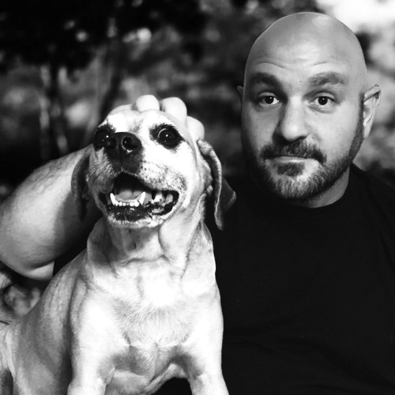
Josh Spero
Hall-Lore-Ween · Hall-Lore-Ween: Thrice The Fright · It's Hall-Lore-Ween Again!
Growing up, Josh Spero was always fascinated with Halloween and the darker side of things. As a child, he looked forward to the spooky season all year, eagerly awaiting his chance to visit the pumpkin patch, decorate the house with cobwebs and pumpkins, and immerse himself in horror movies and ghost stories. As he grew, his love for all things horror and macabre intensified. His affinity for the season soon became a lifestyle, inspiring him to write and create these spooky tales.
He obtained a Bachelor’s Degree in Kinesiology: Exercise Science and a Master’s in Applied Exercise Science. Armed with knowledge and imagination, he created this world of twisted tales to entertain and thrill readers of all ages. Through his stories, Josh hopes to capture the spirit of Halloween and inspire others to embrace their love for all things spooky. He lives in Los Angeles with his wife, Robin, and their dog Bailee. He remains enthusiastic about the holiday and is eager to share his spooky tales with others!
Iphigenia Strangeworth
Iphigenia Strangeworth became a horror author because she couldn’t afford therapy. When she isn’t writing, she can be found reading, drawing, embroidering, or lecturing her uninterested family members about shipwrecks.
Bonnie Jo Stufflebeam
Bonnie Jo Stufflebeam is the author of the horror novel Grim Root, the short story collection Where You Linger & Other Stories, and the horror novella Glorious Fiends. Her short fiction and poetry has appeared in over 90 publications such as Popular Science, Lightspeed, and LeVar Burton Reads, as well as in six languages. By night, she’s a two-time finalist for the Nebula Award. By day, she works as a Narrative Designer writing games for a mobile game. She lives in Texas with her partner and a mysterious number of cats.

Stephen D. Sullivan
Stephen D. Sullivan is the award-winning author of more than fifty books, including trilogies for Legend of the Five Rings, Spider Riders, and Dragonlance. Other cool stuff he’s worked on includes Dungeons & Dragons and Star Wars (games), Teenage Mutant Ninja Turtles and The Simpsons (comics), Iron Man and Thunderbirds (junior novels), and the 2017 film, Theseus and the Minotaur. His latest projects include Dr. Cushing’s Chamber of Horrors (a classic monster serial), Tournament of Death 4 (fantasy series), and his Scribe-winning novelization of the “Worst Film Ever Made”—Manos: The Hands of Fate. cushinghorrors.com - stephendsullivan.com
Jim Towns
Jim Towns is an award-winning filmmaker, writer, and artist.
His feature films include Prometheus Triumphant, House of Bad, State of Desolation and the upcoming The Beast Inside. His short fiction has been published in print and online by Burial Day, Switchblade Magazine, Dead Fern Press, Castle of Horror, Hellbound Books, and many more. His first nonfiction book American Cryptic was released in 2020 by Anubis Press, and his debut novella Bloodsucker City is available through Castle Bridge Media. His follow-up to American Cryptic is American Boogeywoman.
He lives in San Pedro, CA, with his wife and several mysterious cats.
Tom Waltz
Tom Waltz is the Group Editor/Creative Development for premiere comic book publisher IDW Publishing, as well as the writer of numerous critically acclaimed graphic novels, including Teenage Mutant Ninja Turtles, The Last Fall, Children of the Grave, After the Fire, amongst others. A former U.S. Marine and Desert Storm vet, he grew up in Clinton, Michigan and currently makes his home in San Diego, California.
Lewis Figun Westbrook
Lewis Figun Westbrook (all pronouns/no genders) will always prefer their bio be some kind of joke but apparently that isn’t professional. They are a queer writer of too many genres and artist of too many things. He is currently published in Love Gone Wrong, a horror anthology, and self produced zines. Find them on most social media @lewisrllw
P.F. White
P. F. White is a graduate of Dartmouth College's MALS program. His first short story was published in 2009, and was about a cowboy whose life started to mirror the increasingly bizarre tales told of him. His second story was more reasonable: it was about a boxing corn monster (and he sold it to a literary magazine).
Since then his life- much like that of his first creation- has grown increasingly strange. He's lived in nine states, three continents, and one tomb. He has taught essay writing, fiction, ESL, and knife-fighting. He has studied ten martial arts, been married for over ten years, and published twenty short stories. He is utterly addicted to stories and coffee.
Contrary to popular belief: he is not a cosmic horror masquerading as an ordinary human.
As of yet, he has eaten no one.
Jo Whittemore
Jo Whittemore is a writing coach and author of the Supergirl novel trilogy (all-new adventures based on the CW television show), as well as numerous middle grade humor novels, including a novel for Girls Who Code and titles such as Me & Mom Vs. The World, the Confidentially Yours hexalogy, and the Silverskin Legacy fantasy trilogy. Jo writes from her secret lair in San Diego that she shares with her husband and daughter.
Rich Wilburn
Rich Wilburn has had a lifelong fascination with stories and storytelling in all media, particularly in the realms of sci-fi, fantasy, and tales of the sea. His yarn-spinning idols include Glen Cook, Patrick O’Brian, J.R.R. Tolkien, Quentin Tarantino, Isaac Asimov, Steven King, Glen Larson, and – yes – even George Lucas.
Rich (barely) graduated from the University of Illinois with a BS in Civil Engineering and is currently the principal civil engineer for a small suburb of St. Louis. He lives in southwestern Illinois with his long-suffering wife, has successfully raised two fully functional adult offspring, and is the proud owner of the smartest Shih-Tzu in the known universe (or so he says…).
Drew Wolle
Drew Wolle (It’s pronounced like “Wally.”) lives in Dripping Springs, Texas, in the Hill Country outside Austin. An award-winning copywriter, he’s also worked as a magazine editor, travel writer, content specialist, creative consultant, camp counselor, fashion retail professional (okay, he worked at Banana Republic) and an unskilled laborer in a pizza shop. Drew has lived in the Caribbean (Trinidad, West Indies), Europe (Madrid for a brief stint) and various places in Texas—including the oil country of West Texas (Midland), where he grew up, and Fort Worth, where he earned a journalism degree from Texas Christian University. With a wife, two daughters, two dogs and family nearby, his heart is full … and he’s a huge fan of Wilco (etc.), playing soccer and watching college football (sigh). Drew is currently taking a break from the corporate world as he works on a novel and a collection of short stories.
CASTLE BRIDGE MEDIA

Bruce Lanier Wright
Nightwalkers: Gothic Horror Movies Revised Edition · Yesterday's Tomorrows: The Golden Age of Sci-Fi Movie Posters
Bruce Lanier Wright has written two books and edited several more, as well as some millions of other words devoted to topics ranging from tax policy to endangered lizards. He has a lifelong obsession with classic science fiction, fantasy and horror in all its forms, and a rather daunting collection devoted to same. Loves his family, all dogs and the aroma of aging pulp magazines.
In Churl Yo
Austinites · Isonation · Elsie Frankenstein and the Case of the Disappearing Dog · Sherry Dracula and the Case of the Lunchroom Phantom · Rico Gillman and the Case of the See-Through Woman · Play Role Play
In Churl Yo has served as an editorial director and an award-winning creative consultant to several magazines during his career. Amazing Stories called his debut novel Isonation “a fast-paced post-pandemic story where nothing turns out to be quite what it seems.” His follow-up novel Austinites offers readers a literary nostalgia-infused trip through 1990’s Austin. His new novel, Play Role Play, will be published in 2026. Born and raised in Texas, where he graduated from the University of Texas at Austin with a degree in Marketing, he made the move to cooler and greener climes out West with his wife and two children.